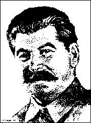

J. V.
|  |
C O N T E N T S
|
1: Political Carelessness . . . . . . . . . . . . 2: Capitalist Encirclement . . . . . . . . . . . 3: Present-Day Trotskyism . . . . . . . . . . . 4: The Seamy Side of Economic Success . . . . . . . 5: Our Tasks . . . . . . . . . . . . . . . .
Concluding Speech . . . . . . .
. . . . . . . |
5 6 11 14 21 25
40 |
page 5
Report by Joseph Stalin, General Sec-
COMRADES, it can be seen from the reports and the discussion on them at the Plenum that we are dealing here with the following three basic facts:
First, the wrecking and diversive spying work of the agents of foreign countries, among whom the Trotskyites played an active enough role, affected to some degree or other all or almost all our organizations, both economic, administrative and Party.
Second, the agents of foreign countries among the Trotskyites penetrated not only into the lower organizations but also into some responsible positions.
Third, some of our leading comrades, both in the center and in the localities, were not only unable to recognize the real faces of these wreckers, diversionists, spies and murderers, but they were so careless, complacent and naive that not infrequently they themselves assisted the agents of foreign powers to get into various respollsible positions.
These are three indisputable facts which naturally arise from the reports and the discussion on them.
page 6
HOW can it be explained that our leading comrades, who have a rich experience of struggle against every kind of anti-Party and anti-Soviet trend, proved to be so blind and naive in this case that they were unable to recognize the real face of the enemies of the people, were unable to discern the wolves in sheep's clothing, were unable to tear the mask from them?
Can it be stated that the wrecking and diversional -- spying -- work of the agents of foreign powers who were busy on the territory of the U.S.S.R. could be something unexpected and unprecedented for us? No, this cannot be stated. This is shown by the wrecking acts in various branches of national economy during the past ten years, starting with the Shakhty period, which are set out in official documents.
Can it be stated that we have lately had no warning signals and forewarning directives about the wrecking, spying or terroristic activity of the Trotskyite-Zinovievite agents of fascism? No, this cannot be stated. There were such signals, and Bolsheviks have no right to forget them.
The foul murder of Comrade Kirov was the first serious warning showing that the enemies of the people will practice duplicity and, in doing so, will disguise themselves as Bolsheviks, as Party members, so as to worm
page 7
their way into our confidence and open a path for themselves into our organizations.
The trial of the "Leningrad Center", like the Zinoviev-Kamenev trial, provided new foundations for the lessons arising from the fact of the foul murder of Comrade Kirov.
The trial of the "Zinoviev-Trotskyite bloc" extended the lessons of the previous trials, plainly showing that the Zinovievites and Trotskyites unite around themselves all the hostile bourgeois elements, that they had become the spying and diversionist -- terroristic -- agency of the German secret police, that double-dealing and concealment are the only means by which the Zinovievites and Trotskyites can penetrate into our organizations, that vigilance and political keenness are the truest means of preventing such penetration, for the liquidation of the Zinovievite-Trotskyite gang.
The Central Committee of the C.P.S.U. in its closed letter of January 18, 1935, regarding the foul murder of Comrade Kirov, gave a resolute warning to the Party organizations against political complacency and parochial gaping. It says in the closed letter:
"We must put an end to opportunist complacency arising from the mistaken presupposition that in proportion to the growth of our forces the enemy will grow ever tamer and more inoffensive. Such a presupposition is basically wrong. It is a belch of the Right deviation, which assured everyone that the enemies would quietly creep into socialism, that in the long run they would become real socialists. It
page 8
In the closed letter of July 29, 1936, regarding the spying and terroristic activity of the Trotskyite-Zinovievite bloc, the Central Committee of the C.P.S.U. called on the Party organization to show the maximum vigilance, to be able to recognize the enemies of the people no matter how well masked. It says in the closed letter:
"Now when it has been proved that the Trotskyite-Zinovievite scum unite all the most bitter and sworn enemies of the working people of our country -- spies, agents provocateurs, diversionists, White Guards, kulaks, etc. -- in the struggle against Soviet power, when every distinguishing mark has been obliterated between these elements on the one hand and the Trotskyites and Zinovievites on the other, all our Party organizations, all members of the Party must understand that the vigilance of Communists is necessary in every field and in all situations. An indispensable quality of every Bolshevik in the present conditions must be the ability to recognize the enemy of the Party no matter how well he be masked."
page 9
So signals and warnings were given.
What did these signals and warnings call for?
They called for the liquidation of the weakness of Party organizational work and the conversion of the Party into all impregnable fortress into which not a single doubledealer could penetrate.
They called for putting a stop to the underestimation of Party political work and making a resolute turn in the direction of strengthening such work to the utmost, in the direction of strengthening political vigilance.
And what happened? The facts have shown that our comrades took in these signals and warnings with more than stiffness.
This is eloquently shown by all the facts which we know from the sphere of the campaign for verifying and exchanging Party documents.
How can it beexplained that these warnings and signals did not produce the proper action? How can it be explained that our Party comrades in spite of their experience of struggle against anti-Soviet elements, in spite of a whole series of warning signals and forewarning directives, proved to be politically shortsighted in the face of the wrecking and spying diversive work of the enemies of the people?
Is it that our Party comrades have become worse than they were before, have become less conscientious and disciplined? No, of course not.
Is it that they haze begun to degenerate? Again no. Such a supposition is completely unfounded.
page 10
Then, what is the matter? Whence arises such gaping, carelessness, complacency, blindness?
The fact is that our Party comrades, carried away by economic campaigns and by enormous successes on the front of economic construction, simply forgot some very important facts which Bolsheviks have no right to forget. They forgot one fundamental fact from the sphere of the international position of the U.S.S.R. and did not notice two very important facts which apply directly to the present wreckers, spies, diversionists and murderers sheltering behind the Party card and disguised as Bolsheviks.
page 11
WHAT are these facts which our Party comrades forgot, or which they simply did not notice?
They forgot that Soviet power has conquered only one-sixth of the world, that five-sixths of the world is in the possession of capitalist powers. They forgot that the Soviet Union is in the conditions of capitalist encirclement. It is an accepted thing to talk loosely about capitalist encirclement, but people do not want to ponder upon what sort of a thing this capitalist encirclement is.
Capitalist encirclement -- that is no empty phrase; that is a very real and unpleasant feature. Capitalist encirclement means that here is one country, the Soviet Union, which has established the socialist order on its own territory and besides this there are many countries, bourgeois countries, which continue to carry on a capitalist mode of life and which surround the Soviet Union, waiting for an opportunity to attack it, break it, or at any rate to undermine its power and weaken it.
Our comrades forgot this fundamental fact. But it is that precisely which determines the basis of relations between the capitalist encirclement and the Soviet Union.
Take for example the bourgeois states. Simple-minded people may think that extremely good relations reign between them, as between states of the same type. But only simpleminded people can think so. In reality the
page 12
relations between them are far from being those of good neighbors. It has been proved as plainly as two and two make four that the bourgeois states shower their spies, wreckers, diversionists and sometimes murderers on each other, behind their frontiers; give them instructions to worm themselves into the factories and institutions of these states, to create their own network there and "in case of necessity" to smash them from the rear so as to weaken them and undermine their power. Such is the case at the present time.
Such, too, has been the case in the past. Take for example the countries of Europe at the time of Napoleon the First. France at that time was swarming with spies and diversionists from the camp of the Russians, Germans, Austrians and English. And, at the same time, England, the German states, Austria, and Russia had behind their lines no fewer spies and diversionists from the French camp. Agents of Great Britain twice made attempts on the life of Napoleon, and several times roused the peasants of the Vendee in France against the government of Napoleon. And what was Napoleon's government? A bourgeois government which had strangled the French Revolution and retained only those results of the revolution which were profitable to the big bourgeoisie. Needless to say, Napoleon's government did not remain indebted to its neighbors. It also undertook its own diversional measures. Such was the case in the past, 130 years ago. Such is the case now, 130 years after Napoleon the First. France and England at the present day are swarming with German spies and diver-
page 13
sionists and on the other hand, Anglo-French spies and diversionists in turn are at work in Germany. America is swarming with Japanese spies and diversionists, and Japan with American.
Such is the law of relations between bourgeois states.
The question must be put: why should the bourgeois countries be gentler and more neighborly to the Soviet socialist government than they are to bourgeois states or their own type? Why should they send fewer spies; wreckers, dizersionists and murderers behind the frontiers of the Soviet Union than they send behind the frontiers of bourgeois countries which are akin to them? Where did you get this from? Will it not be truer, from the point of view of Marxism, to suppose that the bourgeois states must be sending twice or three times as many wreckers, spies, diversionists and murderers behind the lines of the Soviet Union than behind those of any bourgeois state?
Is it not clear that as long as capitalist encirclement exists there will be wreckers, spies, diversionists and murderers in our country sent behind our lines by the agents of foreign slates?
Our Party comrades forgot about all this, and having forgotten were caught unawares.
This is why the spying and diversive work of the Trotskyite agents of the Japanese and German secret police was completely unexpected by some of our comrades.
page 14
TO PROCEED. In carrying on a struggle against the Trotskyite agents, our Party comrades did not notice, they overlooked the fact, that presentday Trotskyism is no longer what it was, let us say, seven or eight years ago; that Trotskyism and the Trotskyites have passed through a serious evolution in this period which has utterly changed the face of Trotskyism; that in view of this the struggle against Trotskyism and the method of struggle against it must also be utterly changed. Our Party comrades did not notice that Trotskyism has ceased to be a political trend in the working class, that it has changed from the political trend in the working class which it was seven or eight years ago, into a frantic and unprincipled gang of wreckers, diversionists, spies and murderers acting on the instructions of the intelligence services of foreign states.
What is a political trend in the working class? A political trend in the working class is a group or a party which has its own definite political face, platform and program, which does not and cannot hide its views from the working class but, on the contrary, openly and honestly carries on propaganda for its views in full view of the working class, does not fear to show its political face to the working class, does not fear to demonstrate its real aims and tasks to the working class but, on the contrary, goes to
page 15
the working class with open visor to convince it of the correctness of its views. In the past, seven or eight years ago, Trotskyism was one of such political trends in the working class, an anti-Leninist trend, it is true, and therefore profoundly mistaken, but nevertheless a political trend.
Can it be said that present-day Trotskyism, the 1936 Trotskyism, let us say, is a political trend in the working class? No, this cannot be said. Why? Because the present-day Trotskyites are afraid to show their real face to the working class, are afraid to disclose their real aims and tasks to it, and carefully hide their political face from the working class, fearing that if the working class should learn of their real intentions it will curse them as an alien people and drive them from it. This in reality explains how it is that the chief method of Trotskyite work is now not open and honest propaganda of its views among the working class, but the masking of its views, servile and fawning praise for the views of its opponents, a false and pharisaical trampling of its own views in the dirt.
If you remember, Kamenev and Zinoviev at the trial in 1936 strenuously denied that they had any political platform. It was fully possible for them to develop their political platform at the trial. But they did not do so, declaring that they had no political platform. There can be no doubt that both of them were lying when they denied that they had a platform. Even the blind can now see that they had their political platform. But why did they deny the existence of any political platform?
page 16
Because they were afraid to disclose their real political face, they were afraid to demonstrate their real platform for the restoration of capitalism in the U.S.S.R., fearing that such a platform would arouse revulsion in the working class.
At the trial in 1937, Piatakov, Radek and Sokolnikov took a different line. They did not deny that the Trotskyites and Zinovievites had a political platform. They admitted that they had a definite political platform, recognized and unfolded it in their testimony. But they unfolded it not to call on the working class, not to call on the people to support the Trotskyite platform, but in order to curse it and brand it as an anti-people's and anti-proletarian platform.
The restoration of capitalism, the liquidation of the collective farms and state farms, the restoration of the system of exploitation, an alliance with the fascist forces of Germany and Japan to bring war against the Soviet Union nearer, a struggle for war and against the policy of peace, the territorial dismemberment of the Soviet Union, giving the Ukraine to the Germans and the maritime provinces to the Japanese, the preparation of the military defeat of the Soviet Union if enemy slates should attack it, and, as a means of achieving these tasks, wrecking, diversion, individual terrorism against the leaders of the Soviet government, espionage for the benefit of the Japanese and German fascist forces -- such was the political platform of presentday Trotskyism which was set forth by Piatakov, Radek and Sokolnikov.
Naturally the Trotskyites could not but hide such a
page 17
platform from the people. from the workings class. And they hid it not only from the working class but also from the Trotskyite rank and file, and not only front the Trotskyite rank and file but even from the leading group of the Trotskyites, consisting of a small handful of 30 or 40 people. When Radek and Piatakov asked Trotsky's permission to call a small conference, 30 or 40 people, to inform them of the character of this platform, Trotsky forbade them, saying it was inexpedient to talk of the real nature of the platform even to a small group of Trotskyites as such an "opperation" might cause a split.
"Political figures" hiding their views and their platform not only from the working class but also from the Troskyite rank and file, and not only from the Trotskyite rank and file, but from the leading group or Trotskyites -- such is the face of present-day Trotskyism.
But it follows from this that present-day Trotskyism can no longer be called a political trend in the working class. Present-day Trotskyism is not a political trend in the working class but a gang without principle, without ideas, of wreckers, diversionists, intelligence service agents, spies, murderers, a gang of sworn enemies of the working class, working in the pay of the intelligence services or foreign states.
Such is the indisputable result of the evolution of Trotskyism in the past seven or eight years.
Such is the difference between Trotskyism in the past and Trotskyism at the present time.
The mistake of our Party comrades is that they did not notice this profound difference between Trotskyism
page 18
in the past and Trotskyism at the present time. They did not notice that the Trotskyites have long since ceased to be people devoted to an idea, that the Trotskyites have long since turned into highway robbers, capable of any foulness, capable of all that is disgusting, to the point of espionage and the outright betrayal of their country, if only they can harm the Soviet government and Soviet power. They did not notice this and were therefore unable to reconstruct themselves in time to wage battle against the Trotskyites in a new and more regular manner. This is why the abominable work of the Trotskyites of late years was a complete surprise for some of our Party comrades.
To proceed. Finally, our Party comrades did not notice that there is an important difference between the present-day wreckers and diversionists, on the one hand, among whom the Trotskyite agents of fascism play "an active part", and the wreckers and diversionists of the time of the Shakhty trial, on the other hand.
In the first place, the Shakhty and Industrial Party wreckers were people openly alien to us. They were in greater part former owners of factories, former managers for the old employers, former shareholders of old joint-stock companies, or simple bourgeois specialists who were openly hostile to us politically. None of our people had any doubt about the authenticity of the political face of these gentlemen. And the Shakhty wreckers themselves did not conceal their distaste for the Soviet system.
The same cannot be said of the present-day wreckers and diversionists, the Trotskyites. The present-day wreck-
page 19
ers and diversionists, the Trotskyites, are mostly Party people with a Party card in their pocket, and consequently people who formally are not alien to us.
Whereas the old wreckers went against our people, the new wreckers on the contrary cringe to our people, laud them, lick their boots, in order to worm their way into their confidence. As you see, the difference is essential.
In the second place, the strength of the Shakhty and Industrial Party wreckers was that to a greater or lesser degree they possessed the necessary technical knowledge, while our people, not possessing such knowledge, were forced to learn from them. This circumstance gave a great advantage to the wreckers of the Shakhty period, made it possible for them to do their wrecking work freey and unhindered, made it possible for them to deceive our people technically.
This is not so with the present-day wreckers, with the Trotskyites. The present-day wreckers have no technical superiority over our people. On the contrary, our people are better trained technically than the present-day wreckers, than the Trotskyites. During the time from the Shakhty period to our own days, tens of thousands of genuine, technically strong Bolshevik cadres have grown up among us. One could mention thousands and tens of thousands of Bolshevik leading figures technically developed in comparison with whom all such people as Piatakov and Livshitz, Shestov and Boguslavsky, Muralov and Drobnis are empty windbags and mere tyros from the point of view of technical training. In this case, what does the strength of the present-day wreckers, the Trot-
page 20
skyites, consist of? Their strength lies in the Party card, in the possession of a Party card. This strength lies in the fact that the Party card gives them political trust and opens the doors of all our institutions and organizations to them.
Their advantage lies in the fact that holding a Party card and pretending to be friends of the Soviet power they tricked our people politically, misused their confidence, did their wrecking work furtively, and disclosed our secrets of state to the enemies of the Soviet Union. This "advantage" is a doubtful one in its political and moral values, but still it is an "advantage". This "advantage", in reality, explains the fact that the Trotskyite wreckers, as people with a Party card having access to all places in our institutions and organizations, were a real windfall for the intelligence services of foreign states.
The mistake of some of our Party comrades is that they did not notice, did not understand all this elifferellce between the old and the new wreckers between the Sllakhty wreckers and the Trotskyites, and not noticing this, they were unable to reconstruct themselves in tinle so as lo wage battle against the new wreckers in a new way.
page 21
SUCH are the basic facts from the sphere of our international and internal situation, about which many of our party comrades forgot, or which they did not notice.
This is why our people were taken by surprise by the events of the last few years as regards wrecking and diversion.
It may be asked: But why did our people not notice all this, why did they forget about all this? Where did all this forgetfulness, blindness, carelessness and complacency come from?
Is it an organic defect in the work of our people? No, it is not an organic defect. It is a temporary phenomenon which can be rapidly liquidated by some efforts on the part of our people.
Then what is the matter?
The matter is that our Party comrades have been totally absorbed in economic work in recent years, have been engrossed to the limit in economic successes, and being engrossed in all these things forgot about all else, threw aside all else.
The matter is that being carried away by economic sucesses they began to regard this as the beginning and end of everything, and simply gave up paying attention to small things as the international position of the Soviet Union, capitalist encirclement, strengthening of the
page 22
political work of the Party, struggle against wrecking, etc., supposing all these questions to be second-rate and even third-rate matters.
Successes and achievements are, of course, a great thing. Our successes in the sphere of socialist construction are truly enormous.
But successes, like everything else under the sun, have their seamy side. Among people who are not very skillful in politics big successes and big achievements not infrequently give rise to carelessness, complacency, self-satisfaction, overweening self-confidence, swell-headedness and bragging. You cannot deny that braggarts have lately developed among us tremendously. It is not surprising in these circumstances of big and serious successes in the sphere of socialist construction that feelings of boastfulness are created, feelings of showy demonstration of our successes, and feelings are created for underestimating the strength of our enemies, feelings of overestimation of our own strength, and as a result of all this political blindness appears.
I must here say a few words about the dangers connected with successes, about the dangers connected with achievements.
We know by experience of the dangers connected with difficulties. For a number of years we have been fighting against such kinds of dangers, and I must say not without success. Among people who are not staunch, dangers connected with difficulties not infrequently give rise to downcast feelings, distrust in their own forces, feelings of pessimism. And, on the contrary, when it is
page 23
a matter of fighting against the dangers which arise from difficulties, people are tempered in this struggle and emelge from the struggle really granite Bolsheviks.
Such is the nature of the dangers connected with difficulties. Such are the results of overcoming difficulties.
But there is another kind of danger, the danger connected with successes, the danger connected with achievements. Yes, yes, comrades, dangers connected with successes, with achievements. These dangers consist in the fact that among people little skilled in politics and not having seen much, the condition of successes -- success after success, achievement after achievement, the overfulfilment of plans after the overfulfilment of plans -- gives rise to feelings of carelessness and self-satisfaction, creates an atmosphere of showy triumphs and mutual congratulations which kill the sense of proportion and dull political instinct, take the spring out of people and impel them to rest on their laurels.
It is not surprising that in this narcotic atmosphere of swell-headedness and self-satisfaction, this atmosphere of showy demonstrations and loud self-praise, people forget some essential facts which are of first-grade significance for the fate of our country; people begin to miss seeing such unpleasant facts as capitalist encirclement, the new forms of wrecking, the dangers connected with our successes, etc.
Capitalist encirclement? A mere bagatelle! What significance can some capitalist encirclement or other have if we fulfill and surpass our economic plans? The new forms of wrecking, the struggle against Trotskyism? Mere
page 24
details! What significance can all these trifles have when we fulfill and surpass our economic plans? The Party statutes, the election of Party organs, the reporting of the Party leaders to the mass of the Party members -- is there really any need for all this? Is it worth while worrying about all these trifles at all if our economy grows and the material situation of the workers and peasants becomes ever better and better? Mere details! We overfulfil the plans, our Party is not bad, the Central Committee of the Party is also not bad -- what else do we need? They are funny people sitting there in Moscow in the Central Committee of the Party. They invent some kind of questions, talk about some wrecking or other, don't sleep themselves, and don't let other people sleep. . . .
This is an example plain to see of how easily and "simply" some of our inexperienced comrades are infected with political blindness as the result of a dizzying rapture in economic successes.
Such are the dangers connected with successes, with achievements.
Such are the reasons why our Party comrades are carried away by economic successes, have forgotten facts of an international and internal character which are of real importance for the Soviet Union, and have not noticed a whole series of dangers surrounding our country.
Such are the roots of our carelessness, forgetfulness, complacency, and political blindness.
Such are the roots of the shortcomings in our economic and Party work.
page 25
retary, to the Plenum ( Plenary Session )
of the Central Committee of the Com-
munist Party of the Soviet Union,
March 3, 1937.
1: Political Carelessness
is not the business of the Bolsheviks to rest on their laurels and stand around gaping. It is not complacency that we need but vigilance, real Bolshevik revolutionary vigilance. It must be remembered that the more desperate the position of the enemies, the more willing they will be to seize on extreme measures as the only measures of doomed people in their struggle against Soviet power. We must remember this and be vigilant."
2: Capitalist Encirclement
3: Present-Day Trotskyism
4: The Seamy Side of Economic Success